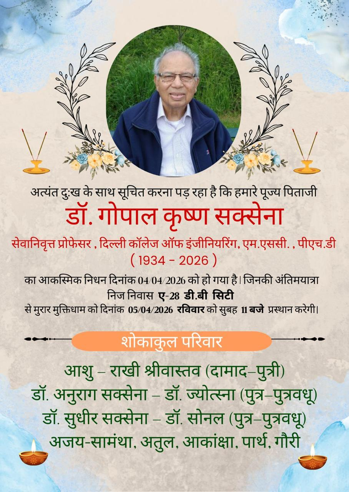
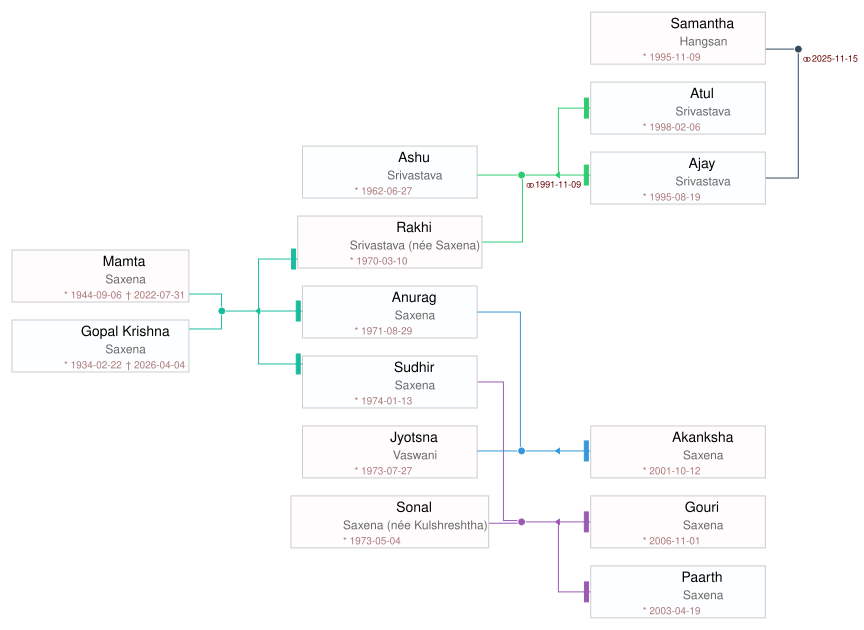

Posters
Click an image to view full size

Prayer Songs
Click each song to view the English transliteration and translation
Hindi
जाहि विधि राखे राम ताहि विधि रहिए
तू अकेला नहीं प्यारे, राम तेरे साथ में
जग से तू कुछ ना माँगे, हरि कृपा से कुछ नहीं
हो गई मानव जनम की, व्यर्थ ये सारी बात
कल तक तेरे थे न होंगे, समझ ले तू अकेला है
Transliteration
Translation
Sitaram Sitaram Sitaram kahiye
Jahi vidhi rakhe Ram tahi vidhi rahiye
Say "Sitaram, Sitaram, Sitaram"
In whatever way Ram keeps you, remain content in that way.
Mukh mein ho Ram naam, Ram seva haath mein
Tu akela nahin pyare, Ram tere saath mein
Keep Ram's name on your lips, and Ram's service in your hands.
You are not alone, dear one — Ram is with you.
Kya garibi kya amiri, Ram jo de so sahi
Jag se tu kuchh na mange, Hari kripa se kuchh nahi
What is poverty, what is wealth — whatever Ram gives is right.
Do not ask anything from the world; nothing is without Hari's grace.
Kaam krodh mad lobh mein, phanse rahe kyon din raat
Ho gayi maanav janam ki, vyarth ye saari baat
Why remain trapped in lust, anger, pride, and greed day and night?
This entire precious human birth is being wasted.
Dhan joban ka ghamand na kar, ye to chaar din ka mela hai
Kal tak tere the na honge, samajh le tu akela hai
Do not be proud of wealth and youth — this is but a fair of four days.
What was yours yesterday will not remain tomorrow; understand, you are alone.
Hindi
भजन बिना चैन न आए
बिन भजन के ये जीवन है, जैसे कमल बिना पानी
जनम मरण के भवसागर में, बिन भजन डूब जाए
एक दिन सबको जाना होगा, सत्य वचन मन में बिठाओ
Transliteration
Translation
Bhajan bina chain na aaye Ram
Bhajan bina chain na aaye
Without devotional singing, there is no peace, O Ram,
Without bhajan, there is no peace.
Tan mein Ram, man mein Ram, Ram bina sab soona
Bin bhajan ke ye jeevan hai, jaise kamal bina paani
Ram in the body, Ram in the mind — without Ram everything is empty.
Life without bhajan is like a lotus without water.
Maya jaal pasaara jag mein, moh ne hai lalchaaya
Janam maran ke bhavsaagar mein, bin bhajan doob jaaye
Maya (illusion) has spread its web in the world, attachment has enticed us.
In the ocean of birth and death, without bhajan one will drown.
Sant janon ka kehna maano, Hari charanon mein dhyan lagao
Ek din sabko jaana hoga, satya vachan man mein bithao
Heed the words of the saints, focus your mind on Hari's feet.
One day everyone must depart — engrave this truth in your heart.
Hindi
आ जाते हैं राम कोई बुला के देख ले
अहंकार की गठरी, सिर से उतार के देख ले
राम नाम के बदले में, कुछ तो बेच के देख ले
प्रेम भक्ति की डोर से, रघुवर बँधे आए थे
राम भरोसे छोड़ दे, कोई छोड़ के देख ले
Transliteration
Translation
Ram naam ati meetha hai koi gaa ke dekh le
Aa jaate hain Ram koi bula ke dekh le
The name of Ram is very sweet — try singing it and see!
Ram comes to you — try calling Him and see!
Andhiyaara hai man ka, deepak jala ke dekh le
Ahankaar ki gathri, sir se utaar ke dekh le
There is darkness in the mind — try lighting a lamp and see.
The bundle of ego on your head — try putting it down and see.
Amolak ye maanav tan, kisi se poochh le
Ram naam ke badle mein, kuchh to bech ke dekh le
This human body is priceless — ask someone and find out.
In exchange for Ram's name, try giving something up and see.
Shabari ke joothe ber, Prabhu ne khaaye the
Prem bhakti ki dor se, Raghuvar bandhe aaye the
Shabari's half-eaten berries, the Lord ate with love.
Bound by the thread of loving devotion, Raghuvar (Ram) came to her.
Ajaamil Ganika taare, jo sharan mein aaye
Ram bharose chhod de, koi chhod ke dekh le
He redeemed Ajamil and Ganika — those who took His shelter.
Surrender everything trusting in Ram — try letting go and see.
Hindi
मैली चादर ओढ़ के कैसे द्वार तेरे आऊँ
ओढ़ के मैंने मैली करी
काम क्रोध मद लोभ ने धोबिया,
इसने धोबी धोई नहीं
धूल में मिट्टी में मैली हो गई
बिन साबुन बिन पानी के,
ये चादर धुल न पाई
राम नाम रस भर दो
भक्ति प्रेम के साबुन से,
ये चादर धो के आऊँ
Transliteration
Translation
Maili chadar odh ke kaise dwaar tere aaun
Maili chadar odh ke kaise dwaar tere aaun
Having soiled this sheet, how can I come to Your door?
Having soiled this sheet, how can I come to Your door?
Jab maine chadar li tere naam ki,
Odh ke maine maili kari
Kaam krodh mad lobh ne dhobiya,
Isne dhobi dhoi nahi
When I received the sheet in Your name,
I put it on and made it dirty.
Lust, anger, pride, and greed were the washermen —
but these washermen never washed it clean.
Dhoop mein chhanv mein maili ho gayi,
Dhool mein mitti mein maili ho gayi
Bin saabun bin paani ke,
Ye chadar dhul na paai
In sunshine and shade it became soiled,
In dust and dirt it became soiled.
Without soap, without water,
this sheet could not be washed clean.
Kahat Kabir suno bhai saadho,
Ram naam ras bhar do
Bhakti prem ke saabun se,
Ye chadar dho ke aaun
Says Kabir, listen O holy ones,
fill it with the essence of Ram's name.
With the soap of devotion and love,
let me wash this sheet and come to You.
Hindi
जहाँ तुम चले गए
दिल में रह गई जो बात
ये सोच के हर रात
जिया जलता है
रात गई फिर दिन भी गुज़ारें
दर पे तेरे ये हारे
खड़े रहते हैं
बादल में चाँद छुपे जैसे
ढल जाए उम्र फिर भी
जियेंगे ऐसे
जहाँ तुम चले गए
Transliteration
Translation
Chitthi na koi sandesh, jaane wo kaun sa desh
Jahan tum chale gaye
No letter, no message — who knows what land that is
where you have gone away.
Aankhon mein reh gayi jo baat,
Dil mein reh gayi jo baat
Ye soch ke har raat
Jiya jalta hai
The words that remained unsaid in my eyes,
the feelings that remained in my heart —
thinking of these every night,
my soul burns.
Beet gayi kitni hi bahaaren
Raat gayi phir din bhi guzaaren
Dar pe tere ye haare
Khade rehte hain
How many springs have passed,
nights go by, then days are endured too.
Defeated, at your doorstep,
I keep standing.
Kaate hain ab ye din aise
Baadal mein chaand chhupe jaise
Dhal jaaye umr phir bhi
Jiyenge aise
I pass these days now
like the moon hidden behind clouds.
Even if a lifetime passes,
I will go on living like this.
Jaane wo kaun sa desh
Jahan tum chale gaye
Who knows what land that is
where you have gone away.
Family Tree

Photo Albums
View shared photo collections on Google Photos